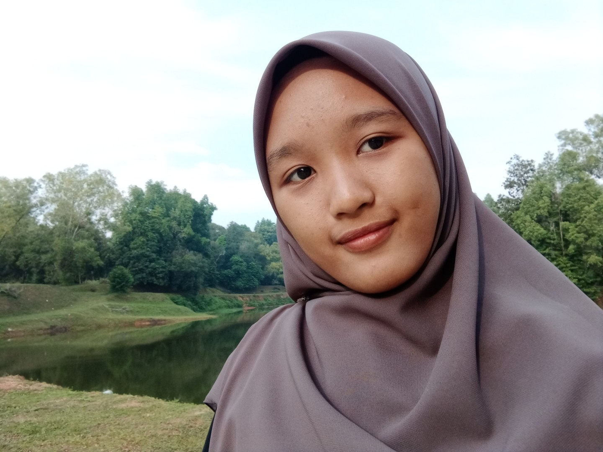

| I'm Nor Anis Ayu binti Mohd Nazri from KIM1204C want to give special thanks to my lecturer for subject Introduction to Web Content Management & Design (IMD311), Encik Mohd Firdaus bin Mohd Helmi. Thanks for give me chance to finish up this individual assignment very well and always guide me whenever I need it. For me this task need high effort to complete it perfectly and fully the guideline requirement. Plus, all the knowledge about this subject were learned via online only without attend physical class. It affected from pandemic Covid-19 that caused my friends and me continue our last semester with Online Distance Learning (OLD). But, that situation never broke my ambition to Graduate On Time (GOT). My lecturer, Sir Firdaus never forget to educate me in be panctual person. It is because he never forget to remind my friends and me with the due date for this assignment. So, it can push me up to start this assignment and avoid me from late submission. He also understand student condition especially during Movement Control Order (MCO). Lastly, thanks to my family because always give me moral support and some space during accomplish this task very well. Not forget my friends that give too much help especially in give me understanding about coding and how to apply it in notepad. |